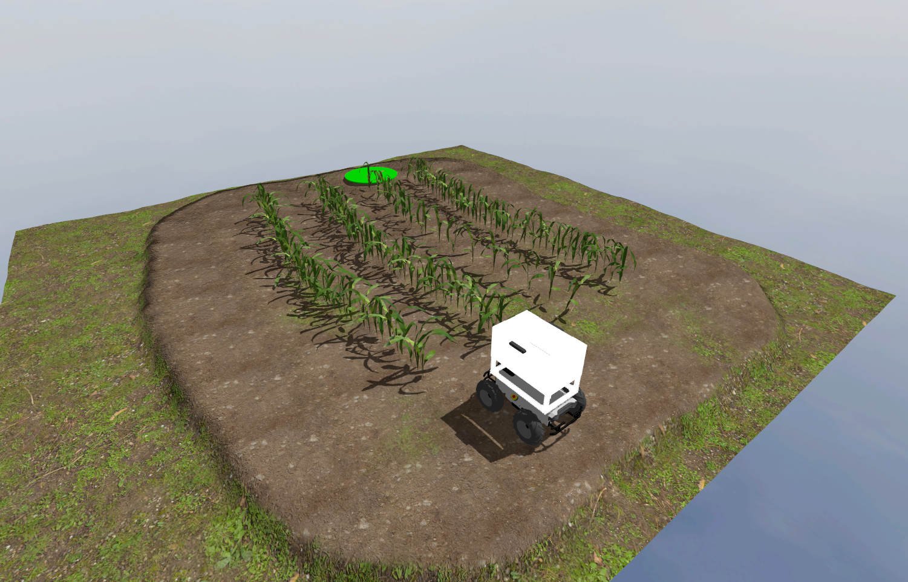

Autonomy Track¶
General Description¶
 Agricultural robots must be able to navigate through crops and farmland, which includes autonomously moving through rows of maize plants on rough terrain. This task involves reaching the end of a row, making a turn, and returning in adjacent rows until the goal location is reached. Teams must develop software to guide the robot through a pre-defined path within the crop rows, from its starting position to the goal location.
Agricultural robots must be able to navigate through crops and farmland, which includes autonomously moving through rows of maize plants on rough terrain. This task involves reaching the end of a row, making a turn, and returning in adjacent rows until the goal location is reached. Teams must develop software to guide the robot through a pre-defined path within the crop rows, from its starting position to the goal location.
Task Guidelines¶
Launching the Task¶
In a new terminal, run the following launch file to bring up the robot in Gazebo and RViz:
You should see the display below in Gazebo and RViz respectively. To the right, there’s the robot and to the left is the green circle which represents the goal location.


Exploring Multiple Worlds¶
We have prepared three worlds you can use as you develop your solution with each world having different row layouts and row lengths.


The default route is world1, but you can select the second and third route option (world2 and world3) by passing the argument in the ros2 launch command as follows:
## route2
ros2 launch parc_robot_bringup task1_launch.py world:=world2
## route3
ros2 launch parc_robot_bringup task1_launch.py world:=world3
Getting the GPS goal location¶
To obtain the GPS goal location for this task, regardless of the route option, you use ROS parameters in a node. Here is an example of how to obtain the goal location as a ROS parameter:
#!/usr/bin/env python3
import rclpy
from rclpy.node import Node
class GoalLocation(Node):
def __init__(self):
super().__init__("goal_location")
# Declare goal latitude and longitude parameters
self.declare_parameter("goal_latitude", rclpy.Parameter.Type.DOUBLE)
self.declare_parameter("goal_longitude", rclpy.Parameter.Type.DOUBLE)
# Get goal location from world coordinates yaml file
goal_lat = self.get_parameter("goal_latitude")
goal_long = self.get_parameter("goal_longitude")
# Print goal location
self.get_logger().info(
"goal location: %f %f"
% (
goal_lat.value,
goal_long.value,
)
)
def main(args=None):
rclpy.init(args=args)
goal_location = GoalLocation()
rclpy.spin(goal_location)
goal_location.destroy_node()
rclpy.shutdown()
if __name__ == "__main__":
main()
The goal location parameter values are obtained from provided .yaml files, which vary depending on the route chosen, and these files are passed as arguments when the node is run as follows:
ros2 run <package_name> <executable_name> --ros-args --params-file <file_name>
For instance, choosing route1 for the navigation task, the following sample command will be executed:
ros2 run <your-package-name> task1_solution.py --ros-args --params-file ~/ros2_ws/src/parc_robot_bringup/config/route1_world_coordinates.yaml
Note
An absolute file path was used to locate the parameter file. A relative file path can also be used
if the command is called inside the config directory where the coordinate files are located. However, specifying the absolute file path is recommended to avoid path errors.
Similarly, the GPS coordinates of the pegs on the farmland can be obtained as a parameter if you need it for localization. To obtain the coordinates for peg A, for instance, the goal_latitude and
goal_longitude parameters from the previous code snippet are replaced with peg_a_latitude and peg_a_longitude respectively.
For reference purposes, considering route1, the corresponding world coordinates are available in the file route1_world_coordinates.yaml.
Warning
Please DO NOT use the cartesian coordinates of the goal location and pegs provided by Gazebo or the world file in any way. You will be penalized if you do.
Converting GPS to Cartesian¶
Our module, gps2cartesian, provides a convenient way to convert GPS locations to x-y Cartesian coordinates. By using the Gazebo world origin as the GPS reference origin (0, 0) in Cartesian coordinates, the gps_to_cartesian() function calculates the Cartesian coordinates of any desired GPS location passed as a parameter to the function. Here is an example of how to use the module to get the cartesian coordinate of the robot with respect to the reference origin:
#!/usr/bin/env python3
## Install the geographiclib 2.0 module for this code to work.
## To install geographiclib 2.0, copy the line below to your terminal.
## pip install geographiclib
## Any of the PARC competition tasks must be running for this code to work.
import rclpy
from rclpy.node import Node
from sensor_msgs.msg import NavSatFix
from parc_robot_bringup.gps2cartesian import gps_to_cartesian
class GPSGoal(Node):
def __init__(self):
super().__init__("gps_goal")
# Subscribe to the gps topic once
self.gps_sub = self.create_subscription(
NavSatFix, "/gps/fix", self.gps_callback, 1
)
def gps_callback(self, gps):
# Get the cartesian coordinates from the GPS coordinates
x, y = gps_to_cartesian(gps.latitude, gps.longitude)
# Print cartesian coordinates
self.get_logger().info(
"The translation from the origin (0, 0) to the gps location provided: %.3f %.3f"
% (x, y)
)
def main(args=None):
rclpy.init(args=args)
gps_goal = GPSGoal()
rclpy.spin(gps_goal)
gps_goal.destroy_node()
rclpy.shutdown()
if __name__ == "__main__":
main()
Preparing your Solution¶
-
Your solution should be prepared as ROS packages to be saved in your solution folder. Create a node executable file in your ROS package which runs ALL the code you need in your solution. Name this node file:
task1_solution.py. -
Hence, your solution to Task 1 should be run by calling the following commands:
In one terminal:
Or
Or
Note
Please wait until both the world and robot models have finished spawning. This process may take longer than usual, especially when running the program for the first time.
In another terminal:
ros2 run <your-package-name> task1_solution.py --ros-args --params-file <absolute-path-to-route-world-coordinates-yaml-file>
Task Rules¶
-
The time limit to complete the task is 8 minutes (480 seconds).
-
The task is ONLY complete when ANY part of the robot is inside the green circle (goal location marker) after following the pre-defined path as shown above.
Note
Ensure you DO NOT provide a solution with hard-coded positions for the robot to move to because in evaluation, the robot’s initial position would be randomized.
Task Evaluation¶
Scoring for this task would be based on the following criteria:
| S/N | Criteria/Metric | Description |
|---|---|---|
| 1 | Pre-defined path | Every route launched has a pre-defined path that must be followed as explained at World Description. |
| 2 | Plant and peg avoidance | The robot should avoid making contact with the tomato plants and/or pegs. (Less contact is better) |
| 3 | Final travel distance to goal | Shortest travel distance from robot (measured from robot center) through the crop rows to the goal which is calculated at the time limit [8 minutes] (Smaller is better) |
| 4 | Completion time | Time from launching the solution to task completion (Smaller is better) |